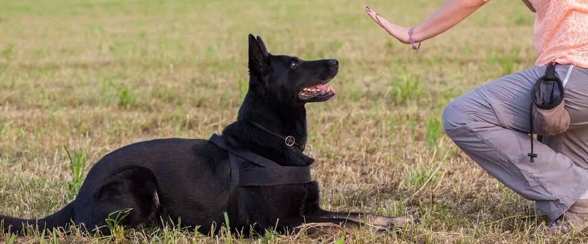

Основы дрессировки собак

Дрессировка собак — это важный процесс, который помогает сформировать у питомца необходимые навыки и поведение. Правильная дрессировка не только улучшает отношения между хозяином и собакой, но и обеспечивает безопасность как для животного, так и для окружающих. В этом лонгриде мы рассмотрим основные принципы дрессировки и пошаговую инструкцию обучения основным командам.
Принципы дрессировки
- Контроль и уважение: Важно установить правильные отношения с собакой. Хозяин должен быть лидером, чтобы собака его слушала. Это достигается через последовательность и уверенность в своих действиях.
- Положительное подкрепление: Используйте похвалу и лакомства для поощрения правильного поведения. Это может быть словесная похвала или физическое ласкание, которые следует чередовать с лакомствами.
- Регулярность: Занятия должны проходить регулярно, но не слишком долго. Оптимальная продолжительность тренировки — 15-20 минут несколько раз в день.
- Отдых: Собака должна иметь возможность отдыхать между занятиями, чтобы избежать усталости и потери интереса к обучению.
Пошаговая инструкция по обучению командам
Шаг 1: Знакомство с кличкой
Начните с того, чтобы приучить собаку откликаться на свою кличку. Используйте лакомства или игрушки, чтобы привлечь внимание собаки, произнося ее имя.
Шаг 2: Основные команды
- Сидеть:
- Поднимите лакомство над головой собаки.
- Когда она сядет, сразу дайте команду "Сидеть" и наградите ее.
- Лежать:
- Начните с команды "Сидеть".
- Опустите лакомство к полу между передними лапами собаки.
- Когда она ляжет, произнесите "Лежать" и дайте ей награду.
- Ко мне:
- Находясь на небольшом расстоянии от собаки, позовите ее к себе.
- Используйте команду "Ко мне" и поощряйте за выполнение.
- Фу:
- Когда собака делает что-то нежелательное, скажите "Фу" и отвлеките ее внимание на что-то другое.
- Поощряйте за прекращение нежелательного действия.
Шаг 3: Закрепление команд
Повторяйте команды в разных ситуациях и местах, чтобы собака научилась выполнять их вне зависимости от обстоятельств. Постепенно уменьшайте количество лакомств, заменяя их похвалой.
Шаг 4: Внедрение в повседневную жизнь
Используйте команды в повседневных ситуациях (например, перед кормлением или на прогулке). Это поможет собаке понять, что команды применимы не только во время тренировок.
Шаг 5: Поддержание навыков
Регулярно повторяйте команды, чтобы поддерживать навыки собаки на должном уровне. Включайте новые команды по мере освоения предыдущих.
Заключение
Дрессировка собак — это процесс, требующий терпения и последовательности. Следуя этим шагам и принципам, вы сможете эффективно обучить своего питомца основным командам и наладить с ним доверительные отношения. Помните, что каждая собака уникальна, поэтому подходите к обучению индивидуально и учитывайте характер вашего питомца.